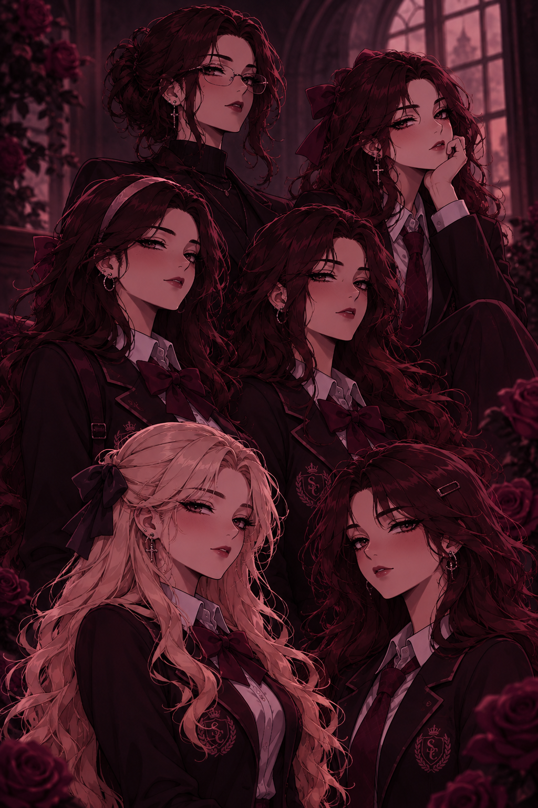
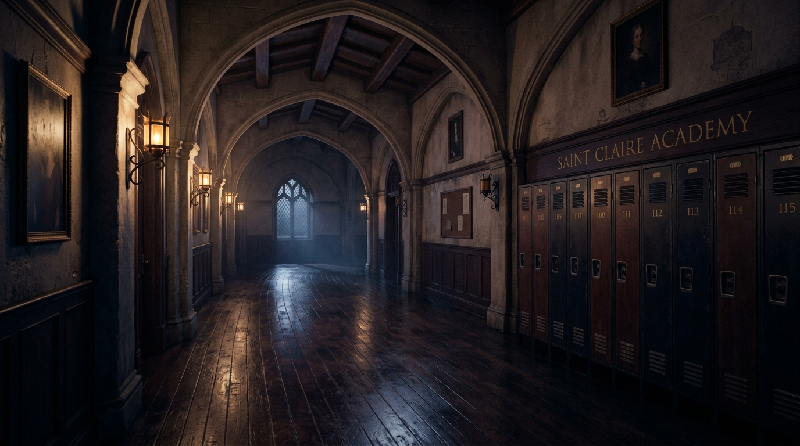
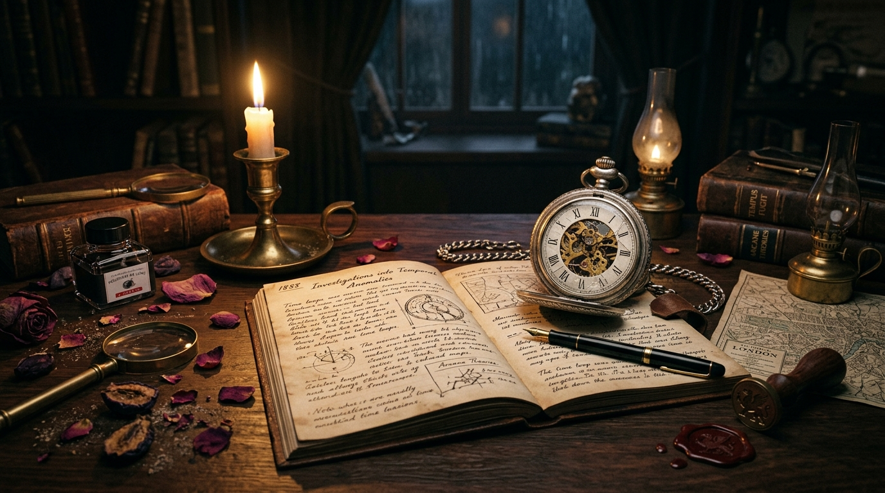

O segredo de
Saint Claire
Rebecca acorda três semanas no passado. Entre boatos anônimos e alianças frágeis, cada escolha pode romper o ciclo antes do desfecho.
(Role a página para ver as seções se sobrepondo)
Três Semanas Para Desvendar
O Destino de Melissa
A Academia Saint Claire mantém suas portas fechadas para escândalos. Porém, por trás dos uniformes impecáveis, sussurros anônimos isolaram Melissa Brooks até o silêncio final.
Rebecca acorda com a oportunidade surreal de reviver esse intervalo. Entre alianças frágeis e aparências calculadas, você precisará decidir em quem confiar.

Evidências Não Reveladas
O que a diretoria classificou como "incidente isolado" foi resultado de semanas de exclusão deliberada e rumores sem autoria.
- ✦ Registro de mensagens cifradas nos armários do 3º ano
- ✦ Depoimentos contraditórios das cinco colegas mais próximas
- ✦ A fita de áudio gravada na biblioteca no dia do sumiço

As Alunas Envolvidas
Cada estudante guarda uma versão diferente sobre o que ocorreu nos corredores.
Rebecca Miller
A Protagonista
Tentando impedir a repetição da tragédia.
Melissa Brooks
A Vítima Silenciada
O centro dos boatos anônimos.
Beatrice Dupont
A Observadora
Testemunha de detalhes cruciais.
O Impacto Real das Palavras
Rebecca's Mystery aborda como o assédio moral e o bullying escolar afetam a saúde mental. Reconhecer os sinais é o primeiro passo para acolher.
Isolamento Forçado
O afastamento gradual é muitas vezes a primeira resposta de quem sofre violência psicológica.
A Voz da Testemunha
Quem assiste em silêncio tem o poder decisivo de mudar o rumo de uma situação de bullying.
Canais de Ajuda
Apoio emocional gratuito e sigiloso disponível pelo CVV através do número 188.

Adentre a Academia
Saint Claire
Suas escolhas definem o destino de Rebecca e a coragem de romper o silêncio.